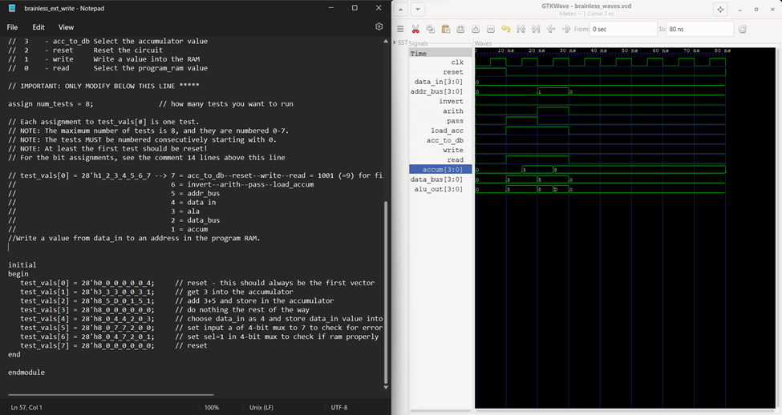

Mastered digital logic: Manipulated binary code to navigate data, memory, and instruction sets.
Crafted test environments: Generated waveform files to visualize input/output behavior.
Powered by Verilog: Wrote code and simulated designs using industry-standard language.
Interactive visualization: Analyzed results with GTKWave to debug and optimize circuits.
Programmable through ROM: Created a functional microprocessor, configurable via simple binary data.
This project dives into crafting the digital logic for a basic microprocessor using Digital, a schematic entry tool. We begin by building the heart of the processor: a 4-bit incrementor for the Program Counter (PC), using primitive adders and analyzing output through waveforms. Half and full adders form the backbone of our calculations, ensuring accurate data manipulation.
To control data flow, we implement a 4-bit 2-to-1 multiplexer, allowing us to choose between two input streams. The Arithmetic Logic Unit (ALU) takes center stage, performing vital operations like addition, subtraction, and negation. We create logic for NOT, NEG, and AND/ADD functionalities, enabling versatile manipulation of data within the CPU.
A 4-bit accumulator stores temporary results, while a separate Program Counter tracks instruction location. We instantiate 16 words of 4-bit RAM, serving as the brainless CPU's memory for both instructions and data. The ram_vals.hex file preloads instructions into memory, acting as a simple program for testing.
We define the instruction set and create a test program to be executed by the microprocessor. A dedicated Memory-Address-Generation circuit ensures efficient access to stored instructions and data. Finally, the controller takes the reins, automatically setting signals for each operation based on preloaded ROM values. The ROM acts as a decoder, generating control signals and driving the finite-state machine that governs the CPU's behavior. This project represents a deep exploration into the fascinating world of digital logic and microprocessor design. By mastering fundamental components and crafting intricate circuits, we build a brainless CPU, bringing life to a sea of ones and zeros.